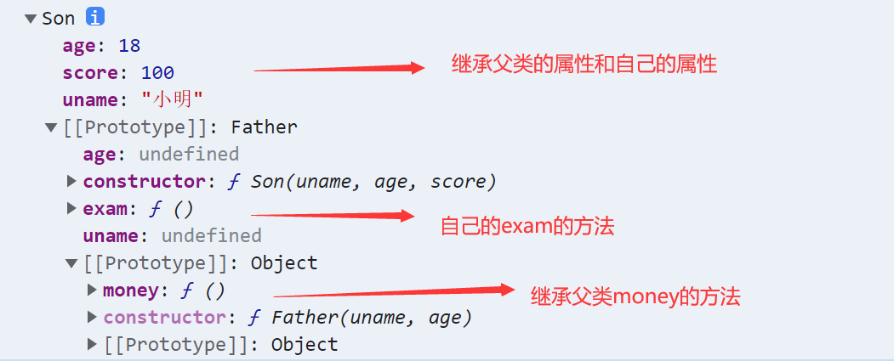

面向对象
在 ES6 中新增加了类的概念，可以使用 class 关键字声明一个类，之后以这个类来实例化对象。类抽象了对象的公共部分，它泛指某一大类（class）对象特指某一个，通过类实例化一个具体的对象
创建类
语法:
//步骤1 使用class关键字
class name {
// class body
}
//步骤2使用定义的类创建实例 注意new关键字
var xx = new name();
- 类里面有个constructor 函数,可以接受传递过来的参数,同时返回实例对象
- constructor 函数 只要 new 生成实例时,就会自动调用这个函数, 如果我们不写这个函数,类也会自动生成这个函数
- 多个函数方法之间不需要添加逗号分隔
- 生成实例 new 不能省略
- 语法规范, 创建类 类名后面不要加小括号,生成实例 类名后面加小括号, 构造函数不需要加function
类创建添加属性和方法
代码样例
<script>
class Student{
constructor(name,age){
this.name = name;
this.age = age;
}
score(score){
console.log(this.name+'考'+score);
}
}
var xiaoming = new Student('小明',18);
console.log(xiaoming);
xiaoming.score(100);
</script>类的继承
语法
// 父类
class Father{
}
// 子类继承父类
class Son extends Father {
} 时刻注意this的指向问题,类里面的共有的属性和方法一定要加this使用
- constructor中的this指向的是new出来的实例对象
- 自定义的方法,一般也指向的new出来的实例对象
- 绑定事件之后this指向的就是触发事件的事件源
- 子类使用super关键字访问父类的方法
代码示例
<script>
class Father{
constructor(x,y){
this.x = x;
this.y = y;
}
sum(){
console.log(this.x + this.y);
}
}
class Child extends Father{
constructor(x,y){
super(x,y);
this.x = x;
this.y = y;
}
substract(){
console.log(this.x - this.y);
}
}
var test = new Child(10,30);
test.substract();
test.sum();
</script>
继承中,如果实例化子类输出一个方法,先看子类有没有这个方法,如果有就先执行子类的
继承中,如果子类里面没有,就去查找父类有没有这个方法,如果有,就执行父类的这个方法(就近原则)
如果子类想要继承父类的方法,同时在自己内部扩展自己的方法,利用super 调用父类的构造函数,super 必须在子类this之前调用
构造函数和原型
实例成员
实例成员就是构造函数内部通过this添加的成员，实例成员只能通过实例化的对象来访问
静态成员
静态成员 在构造函数本身上添加的成员，静态成员只能通过构造函数来访问
构造函数原型prototype
构造函数通过原型分配的函数是所有对象所共享的。
JavaScript 规定，每一个构造函数都有一个prototype 属性，指向另一个对象。注意这个prototype就是一个对象，这个对象的所有属性和方法，都会被构造函数所拥有。
我们可以把那些不变的方法，直接定义在 prototype 对象上，这样所有对象的实例就可以共享这些方法。
代码实例
<script>
function Student(name, score) {
this.name = name;
this.score = score;
}
Student.prototype.print = function(){
console.log("打印成绩中。。。。");
}
var xiaoming = new Student("小明", 100);
xiaoming.print();
</script>对象原型
对象都会有一个属性 __proto__ 指向构造函数的 prototype 原型对象，之所以我们对象可以使用构造函数 prototype 原型对象的属性和方法，就是因为对象有 __proto__ 原型的存在。
__proto__对象原型和原型对象 prototype 是等价的
__proto__对象原型的意义就在于为对象的查找机制提供一个方向，或者说一条路线，但是它是一个非标准属性，因此实际开发中，不可以使用这个属性，它只是内部指向原型对象 prototype
constructor构造函数
对象原型（ __proto__）和构造函数（prototype）原型对象里面都有一个属性 constructor 属性 ，constructor 我们称为构造函数，因为它指回构造函数本身。
constructor 主要用于记录该对象引用于哪个构造函数，它可以让原型对象重新指向原来的构造函数。
一般情况下，对象的方法都在构造函数的原型对象中设置。如果有多个对象的方法，我们可以给原型对象采取对象形式赋值，但是这样就会覆盖构造函数原型对象原来的内容，这样修改后的原型对象 constructor 就不再指向当前构造函数了。此时，我们可以在修改后的原型对象中，添加一个 constructor 指向原来的构造函数。
如果我们修改了原来的原型对象，给原型对象赋值的是一个对象，则必须手动的利用constructor指回原来的构造函数如
function Star(uname, age) {
this.uname = uname;
this.age = age;
}
// 很多情况下,我们需要手动的利用constructor 这个属性指回 原来的构造函数
Star.prototype = {
// 如果我们修改了原来的原型对象,给原型对象赋值的是一个对象,则必须手动的利用constructor指回原来的构造函数
constructor: Star, // 手动设置指回原来的构造函数
sing: function() {
console.log('唱歌');
},
movie: function() {
console.log('演电影');
}
}
var xiaoming = new Star('小明', 19);
console.log(xiaoming)在控制台即可看到constructor的属性，而相反constructor就没有此属性
原型链
每一个实例对象又有一个__proto__属性，指向的构造函数的原型对象，构造函数的原型对象也是一个对象，也有__proto__属性，这样一层一层往上找就形成了原型链。
构造函数实例和原型对象三角关系
1.构造函数的prototype属性指向了构造函数原型对象
2.实例对象是由构造函数创建的,实例对象的__proto__属性指向了构造函数的原型对象
3.构造函数的原型对象的constructor属性指向了构造函数,实例对象的原型的constructor属性也指向了构造函数原型链和成员的查找机制
任何对象都有原型对象,也就是prototype属性,任何原型对象也是一个对象,该对象就有__proto__属性,这样一层一层往上找,就形成了一条链,我们称此为原型链;
当访问一个对象的属性（包括方法）时，首先查找这个对象自身有没有该属性。
如果没有就查找它的原型（也就是 __proto__指向的 prototype 原型对象）。
如果还没有就查找原型对象的原型（Object的原型对象）。
依此类推一直找到 Object 为止（null）。
__proto__对象原型的意义就在于为对象成员查找机制提供一个方向，或者说一条路线。原型对象中this指向
构造函数中的this和原型对象的this,都指向我们new出来的实例对象
通过原型为数组扩展内置方法
演示代码
Array.prototype.sum = function() {
var sum = 0;
for (var i = 0; i < this.length; i++) {
sum += this[i];
}
return sum;
};
//此时数组对象中已经存在sum()方法了 可以始终 数组.sum()进行数据的求
继承
call()
- call()可以调用函数
- call()可以修改this的指向,使用call()的时候 参数一是修改后的this指向,参数2,参数3..使用逗号隔开连接
子构造函数继承父构造函数中的属性
- 先定义一个父构造函数
- 再定义一个子构造函数
- 子构造函数继承父构造函数的属性(使用call方法)
代码实例
<script>
function Father(uname, age){
this.uname = uname;
this.age = age;
}
function Son(uname, age, score){
Father.call(this, uname, age, score);
this.score = score;
}
var son = new Son("小明", 18, 100);
console.log(son);
</script>借用原型对象继承方法
- 先定义一个父构造函数
- 再定义一个子构造函数
- 子构造函数继承父构造函数的属性(使用call方法)
代码实例
<script>
function Father(uname, age){
this.uname = uname;
this.age = age;
}
Father.prototype.money = function(){
console.log("10000万现金");
}
function Son(uname, age, score){
Father.call(this, uname, age, score);
this.score = score;
}
Son.prototype = new Father();
Son.prototype.constructor = Son;
Son.prototype.exam = function(){
console.log("孩子要考试");
}
var son = new Son("小明", 18, 100);
console.log(son);
</script>结果如下图
ES5新增方法
数组方法forEach遍历数组
arr.forEach(function(value, index, array) {
//参数一是:数组元素
//参数二是:数组元素的索引
//参数三是:当前的数组
})
//相当于数组遍历的 for循环 没有返回值数组方法filter过滤数组
var arr = [12, 66, 4, 88, 3, 7];
var newArr = arr.filter(function(value, index,array) {
//参数一是:数组元素
//参数二是:数组元素的索引
//参数三是:当前的数组
return value >= 20;
});
console.log(newArr);//[66,88] //返回值是一个新数组数组方法some
some 查找数组中是否有满足条件的元素
var arr = [10, 30, 4];
var flag = arr.some(function(value,index,array) {
//参数一是:数组元素
//参数二是:数组元素的索引
//参数三是:当前的数组
return value < 3;
});
console.log(flag);//false返回值是布尔值,只要查找到满足条件的一个元素就立马终止循环这两种方法商品页面，可以用for each遍历数据渲染到页面中，根据商品的价格属性筛选商品
代码实例
data.forEach(function(value) {
var tr = document.createElement('tr');
tr.innerHTML = '<td>' + value.id + '</td><td>' + value.pname + '</td><td>' + value.price + '</td>';
tbody.appendChild(tr);
});search_price.addEventListener('click', function() {
var newDate = data.filter(function(value) {
return value.price >= start.value && value.price <= end.value;
});some和forEach区别
- 如果查询数组中唯一的元素, 用some方法更合适,在some 里面 遇到 return true 就是终止遍历 迭代效率更高
- 在forEach 里面 return 不会终止迭代
trim方法去除字符串两端的空格
var str = ' hello '
console.log(str.trim()） //hello 去除两端空格
var str1 = ' he l l o '
console.log(str.trim()） //he l l o 去除两端空格获取对象的属性名
Object.keys(对象) 获取到当前对象中的属性名 ，返回值是一个数组
var obj = {
id: 1,
pname: '小米',
price: 1999,
num: 2000
};
var result = Object.keys(obj)
console.log(result)//[id，pname,price,num]Object.defineProperty
Object.defineProperty设置或修改对象中的属性
Object.defineProperty(对象，修改或新增的属性名，{
value:修改或新增的属性的值,
writable:true/false,//如果值为false 不允许修改这个属性值
enumerable: false,//enumerable 如果值为false 则不允许遍历
configurable: false //configurable 如果为false 则不允许删除这个属性 属性是否可以被删除或是否可以再次修改特性
}) 函数的定义和调用
函数的定义方式
- 方式1 函数声明方式 function 关键字 (命名函数)
function fn(){}- 方式2 函数表达式(匿名函数)
var fn = function(){}- 方式3 new Function()
var f = new Function('a', 'b', 'console.log(a + b)');
f(1, 2);
var fn = new Function('参数1','参数2'..., '函数体')
注意
/*Function 里面参数都必须是字符串格式
第三种方式执行效率低，也不方便书写，因此较少使用
所有函数都是 Function 的实例(对象)
函数也属于对象
*/this
函数内部的this指向
这些 this 的指向，是当我们调用函数的时候确定的。调用方式的不同决定了this 的指向不同，一般指向调用者
改变函数内部 this 指向
call方法
call()方法调用一个对象。简单理解为调用函数的方式，但是它可以改变函数的 this 指向
代码实例
var o = {
name: 'andy'
}
function fn(a, b) {
console.log(this);
console.log(a+b)
};
fn(1,2)// 此时的this指向的是window 运行结果为3
fn.call(o,1,2)//此时的this指向的是对象o,参数使用逗号隔开,运行结果为3apply方法
apply() 方法调用一个函数。简单理解为调用函数的方式，但是它可以改变函数的 this 指向。
代码示例
var o = {
name: 'andy'
}
function fn(a, b) {
console.log(this);
console.log(a+b)
};
fn()// 此时的this指向的是window 运行结果为3
fn.apply(o,[1,2])//此时的this指向的是对象o,参数使用数组传递 运行结果为3bind方法
bind() 方法不会调用函数,但是能改变函数内部this 指向,返回的是原函数改变this之后产生的新函数
如果只是想改变 this 指向，并且不想调用这个函数的时候，可以使用bind
var o = {
name: 'andy'
};
function fn(a, b) {
console.log(this);
console.log(a + b);
};
var f = fn.bind(o, 1, 2); //此处的f是bind返回的新函数
f();//调用新函数 this指向的是对象o 参数使用逗号隔开call、apply、bind三者的异同
共同点 : 都可以改变this指向
不同点:
- call 和 apply 会调用函数, 并且改变函数内部this指向.
- call 和 apply传递的参数不一样，call传递参数使用逗号隔开，apply使用数组传递
- bind 不会调用函数, 可以改变函数内部this指向.
应用场景
- call 经常做继承.
- apply经常跟数组有关系. 比如借助于数学对象实现数组最大值最小值
- bind 不调用函数,但是还想改变this指向. 比如改变定时器内部的this指向.
严格模式
JavaScript 除了提供正常模式外，还提供了严格模式（strict mode）。ES5 的严格模式是采用具有限制性 JavaScript变体的一种方式，即在严格的条件下运行 JS 代码。
严格模式在 IE10 以上版本的浏览器中才会被支持，旧版本浏览器中会被忽略。
严格模式对正常的 JavaScript 语义做了一些更改：
消除了 Javascript 语法的一些不合理、不严谨之处，减少了一些怪异行为。
消除代码运行的一些不安全之处，保证代码运行的安全。
提高编译器效率，增加运行速度。
禁用了在 ECMAScript 的未来版本中可能会定义的一些语法，为未来新版本的 Javascript 做好铺垫。比如一些保留字如：class,enum,export, extends, import, super 不能做变量名
开启严格模式
严格模式可以应用到整个脚本或个别函数中。因此在使用时，我们可以将严格模式分为为脚本开启严格模式和为函数开启严格模式两种情况。
情况一 :为脚本开启严格模式
有的 script 脚本是严格模式，有的 script 脚本是正常模式，这样不利于文件合并，所以可以将整个脚本文件放在一个立即执行的匿名函数之中。这样独立创建一个作用域而不影响其他
script 脚本文件。(function (){ //在当前的这个自调用函数中有开启严格模式，当前函数之外还是普通模式 "use strict"; var num = 10; function fn() {} })(); //或者 <script> "use strict"; //当前script标签开启了严格模式 </script> <script> //当前script标签未开启严格模式 </script>
情况二: 为函数开启严格模式
要给某个函数开启严格模式，需要把“use strict”; (或 ‘use strict’; ) 声明放在函数体所有语句之前。
function fn(){ "use strict"; return "123"; } //当前fn函数开启了严格模式
高阶函数
高阶函数是对其他函数进行操作的函数，它接收函数作为参数或将函数作为返回值输出。
闭包
闭包（closure）指有权访问另一个函数作用域中变量的函数。简单理解就是 ，一个作用域可以访问另外一个函数内部的局部变量。
代码示例
function fn() {
var num = 10;
function fun() {
console.log(num);
}
return fun;
}
var f = fn();
f();案例：计算打车价格
/*需求分析
打车起步价16(3公里内), 之后每多一公里增加 5块钱. 用户输入公里数就可以计算打车价格
如果有拥堵情况,总价格多收取10块钱拥堵费*/
var car = (function() {
var start = 16; // 起步价 局部变量
var total = 0; // 总价 局部变量
return {
// 正常的总价
price: function(n) {
if (n <= 3) {
total = start;
} else {
total = start + (n - 3) * 5
}
return total;
},
// 拥堵之后的费用
yd: function(flag) {
return flag ? total + 10 : total;
}
}
})();
console.log(car.price(5));
console.log(car.yd(true));